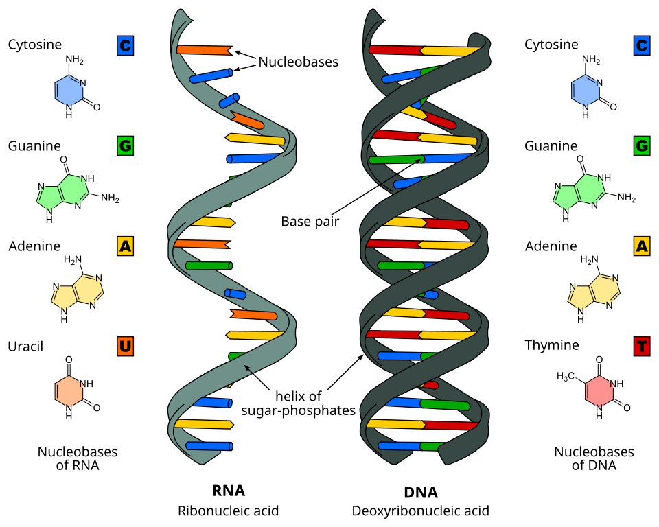

About the Author

Dr. Anamika Kumari
Physician, educator, and writer. Through this platform she shares perspectives on medicine, prevention, clinical practice, and community health.
Learn More →MEDICINE • PREVENTION • INSIGHTS
Articles, observations, case reflections, and perspectives on healthcare written by Dr. Anamika Kumari.

Understanding one of the most common yet frequently overlooked health risks, and why prevention matters.
Read Article →Looking at long-term health, prevention and quality of life.
Why prevention is often the most effective treatment.
Reflections from field experiences and preventive outreach.
Physician, educator, and writer. Through this platform she shares perspectives on medicine, prevention, clinical practice, and community health.
Learn More →